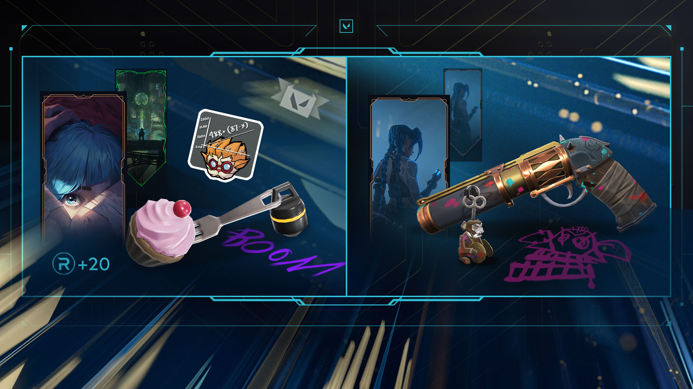

Como dije anteriormente, son skins edicion limitada que salieron por un determinado tiempo, por un evento o por una celebracion de un torneo
Empezamos con el set arcane, la sacaron porque riot creo una serie junto con netflix sobre su mundo, el set tiene dos spray, una skin de sheriff, dos banners y tres titulos

El set champions 2021 fue creado para recaudar fondos para pagarles a los participantes de dicho torneo en el año 2021, el set incluye una vandal, un karambit, tres banners y un titulo

El set champions 2022, al igual que ael anterior, todos los fondos fueron para los participantes del torneo en 2022, el set trae una phantom, un cuchillo mariposa, un banner y un spray